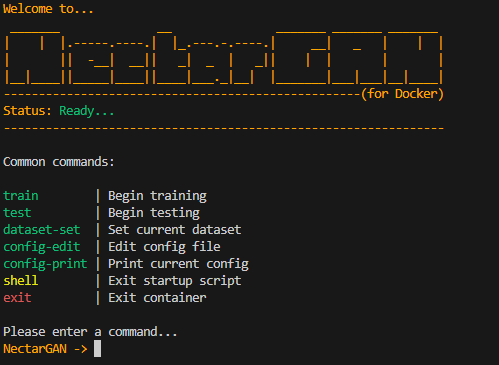

NectarGAN - Getting Started (Docker)
This section will walk you through the process of using NectarGAN from a Docker container.
Before you start...
Docker
To follow this guide, you must first have Docker desktop installed on your host machine.
To get started with Docker, see here: https://www.docker.com/
If you are using a Linux machine as the host and you intend to train with one of the CUDA compute platforms, you will also need to set up the Nvidia Container Toolkit if you have not already done so. See here for more information.
Visdom
NectarGAN uses Visdom for data visualization when running inside of a container. A Visdom server is set up automatically during during build/compose and configured to listen to the main NectarGAN app service, and also to route its output through an open port on the container (8000 by default). This will be explained in greated detail below.
Building/Running the Container
First, clone the repository:
git clone https://github.com/ZacharyBork/NectarGAN.git
Next, run:
cd NectarGAN/docker
From here, we can run:
docker compose build --build-arg TORCH_TYPE=cpu
Setting the value of TORCH_TYPE will tell the Dockerfile which PyTorch compute platform you intend on using so that it can download the wheel from the correct place. The build process will also automatically set the device in the docker_nectargan_config.json (explained below) to the correct value for the given platform. Currently, the available options are:
cpu: CPU-onlycu126: CUDA 12.6cu128: CUDA 12.8
The image size for the cpu build is ~2GB. The cu1** builds are ~12GB. If this arugment is not set, the build will default to cpu.
After the build has finished, we can run:
docker compose up -d
After a few seconds, you should see messages that both the app and visdom services have started successfully, after which time, you can navigate to http://localhost:8000 on your host machine to view the Visdom output.
Files and Structure
Let's have a quick look at the file and directory structure for NectarGAN's Docker build:
NectarGAN/
└── docker/
├── mount/
│ ├── docker_nectargan_config.json
│ ├── input
│ └── output
├── scripts/
│ ├── config_editor.py
│ ├── nectargan.py
│ └── etc.
├── visdom/
│ ├── Dockerfile
│ └── start_server.sh
├── .dockerignore
├── .env
├── docker-compose.yaml
├── Dockerfile
└── entrypoint.sh
There are a couple key things to note:
- The
mountdirectory: This gets mounted as a runtime volume. docker_nectargan_config.json: This is the training/testing config file used by the scripts inside of the container. Note that, since it is in themountdirectory, you are able to make live edits to this file with the container running.- The
mount/inputdirectory: This is the directory where you will place your dataset directories for training and testing models inside of the container. This will be explained in greater detail below. - The
mount/outputdirectory: This is the directory where NectarGAN will export data to (checkpoints, example images, logs). This will also be explained in greater detail below. - The
.envfile: This file currently is only used to configure the Visdom endpoint for the container.
Everything else is related to the build/compose process. The above files/directories are the primary things you will be using to interact with and change the behavior of your container.
Interacting with the Container
With our container running, we can now run:
docker exec -it nectargan-app-1 nectargan
After doing so, you will be greeted with a screen which looks like this:

This is the NectarGAN Docker CLI wrapper. From here, we can run commands to interact with NectarGAN inside of the container. Currently, these commands are:
train
This command allows you to run model training from within the container. The configuration values for the training session will be pulled from the docker_nectargan_config file, but can be edited from the CLI wrapper (explained below).
When run, a Visdom client will be created in the app service to send loss data and example images to the visdom service, a new experiment directory will be created in the mounted output directory, and training will be begin. Soon after, you should begin to see logging information in your console and updates in Visdom on your host machine.

As shown in the above image, all of the training outputs (i.e. checkpoints, logs, example images) will be saved to the mounted output directory, so that they can be accessed immediately on the host machine.
Currently, the only way to stop training prematurely is via Ctrl+C. This also exits the container shell meaning you need to re-run the exec command after. This will be fixed in a future update though.
test
This command will run a multi-step guided process for initializing a model testing session. When you run it, you will be asked to:
- Choose an experiement to test. (from the mounted
outputdirectory) - Choose an epoch to load.
- Choose a dataset to test the model on. (from the mounted
inputdirectory) - Choose a number of test iterations to run. Each iteration will test the model's interence on a single image from the given dataset's
testdirectory.
All testing results (logs, output images) are exported to the experiment directory of the experiment being tested, in a subdirectory called test, inside of the mounted output directory.
dataset-set
This command allows you to set the currently active dataset (dataroot) in the docker_nectargan_config file to any dataset directory in the mounted input directory.
This is done by running the base command, followed by the name of the dataset directory. For example, if you had a dataset called facades, and you would like to train with this dataset inside of the container, first you would place your facades directory inside of the mouted input directory, giving you a directory structure like so:
NectarGAN/
└── docker/
├── Dockerfile
├── docker-compose.yaml
└── mount/
├── docker_nectargan_config.json <--------- NectarGAN Docker training/testing config
└── input/
└── facades/ <------------------------- Your dataset
├── train/
│ └── training_images
├── test/
│ └── traing_images
└── val/
└── validation_images
Then, in the NectarGAN Docker CLI wrapper, we can run:
dataset-set facades # Replace "facades" with the name of your actual dataset directory.
This will set the config dataroot path to the facades directory in the mounted volume, if it exists. You will recieve a confirmation message in the status field if it is successful, as shown in the image below.

config-edit
This command will begin a guided multi-step process which allows you to edit the current value of a field in the docker_nectargan_config file.
Please note: since the docker_nectargan_config file is located inside of the mount directory, you may also edit the file in a text editor on your host machine, and updates will be picked up immediately. This is much easier for large changes. This command is largely provided as a convenience.
config-print
Running this command will print the current config file in raw JSON format to the console.
shell
This will stop the NectarGAN Docker CLI wrapper, and drop you in to the container's native shell. The base image for the nectargan-app image is python:3.12-slim-bookworm, so it is a Debian shell.
To return to the NectarGAN Docker CLI wrapper, you can run the command nectargan. Please note, though, that after doing this, the next time you run the exit command, rather than exiting the container, you will instead be placed back in the container shell, as that is the new parent process. Running exit again, though, will exit the container.
This is also mostly provided as a convenience. It is the same as running docker exec -it nectargan-app-1 /bin/sh from the host machine.
exit
This will exit the interactive container shell (or exit to the interactive container shell, as noted above).